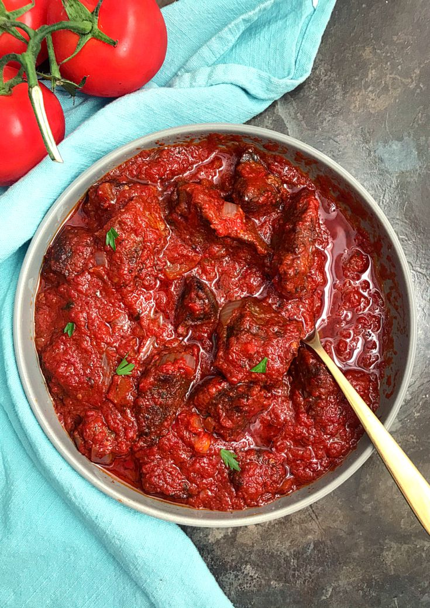

This is a stew that originates from Nigerai as the name implies. It is a
perfect mix of savory, sweet, and spicy.
It is made by frying the pepper base which brings out an intense flavor.
It's not too watery, nor too thick, it's just right when eating it with your choice carbs(rice or spagetti).